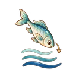
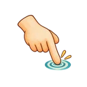
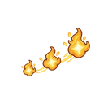
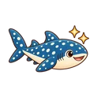

小鳶準備中
.
.
.
0 分
剩 60 秒
音
⏸
鯨鯊出游！分數兩倍送
點水裡的魚，小鳶會俯衝去抓
鯨鯊
小鳶捕魚
基隆港
小鳶捕魚・第 1 關
60 秒內，看你能幫小鳶拿到幾分。

越深越高分
小卷成群、白帶魚扭著游

點魚
小鳶俯衝去抓

連抓加分
連 3 條起每條 +20

鯨鯊加倍
能量滿了按右下角
更多說明
垃圾
抓到會暈一下，要避開
天色
一局裡會自己換：早上→傍晚→夜晚，每個時段魚不一樣
點數
今天算分場次的分數加起來到了門檻，就能在「小鳶樂園」領點數，到「港口換禮」換便當和贈品
開始
回關卡地圖
暫停中
繼續
重新開始
回關卡地圖（這局不算）
時間到
六種漁獲收藏章
0
分
一看就知道怎麼玩
是
否
知道為什麼得分
是
否
還想再玩一局
是
否
再玩一局
回關卡地圖
複製測試紀錄
![]()